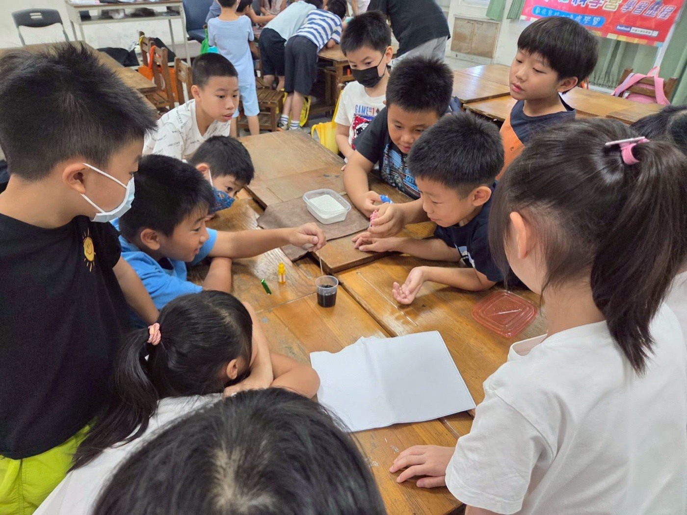
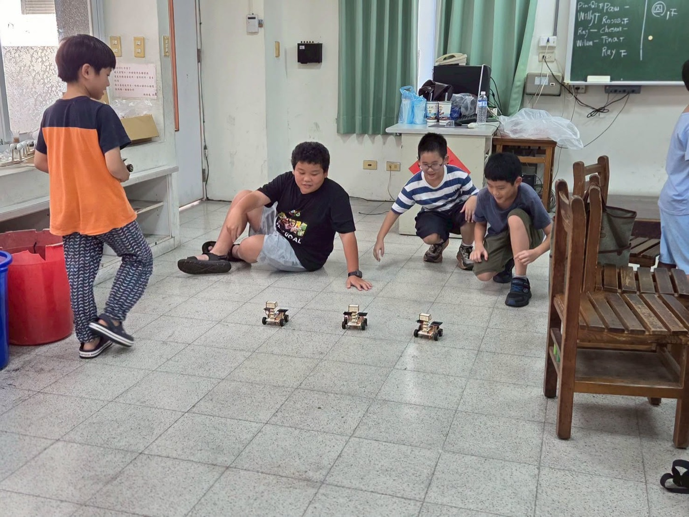
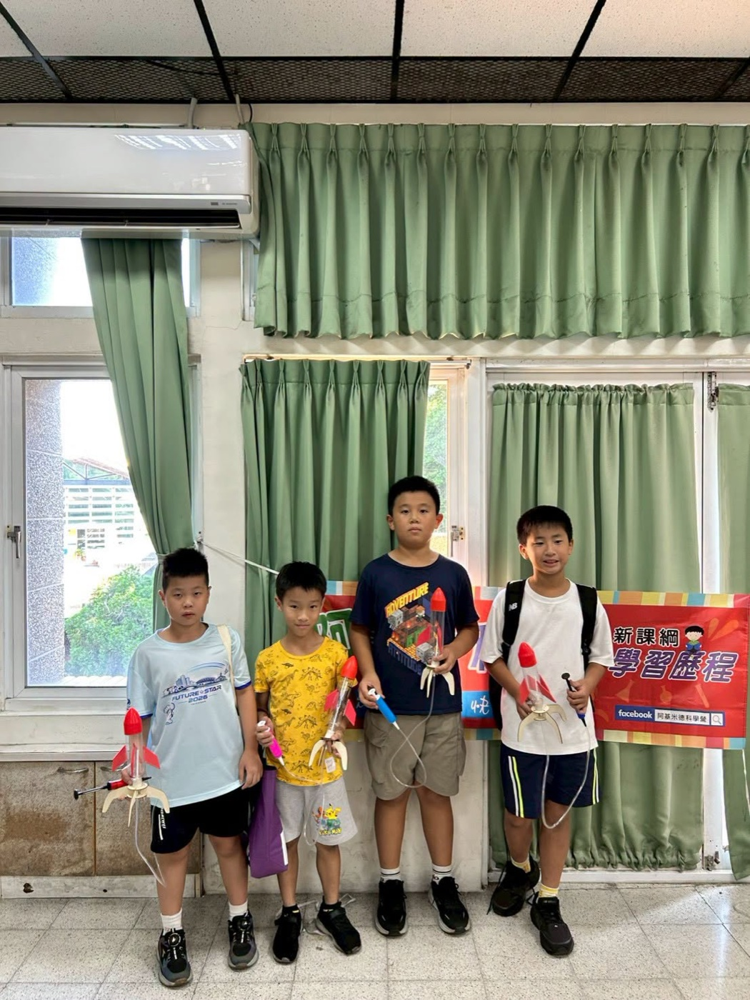
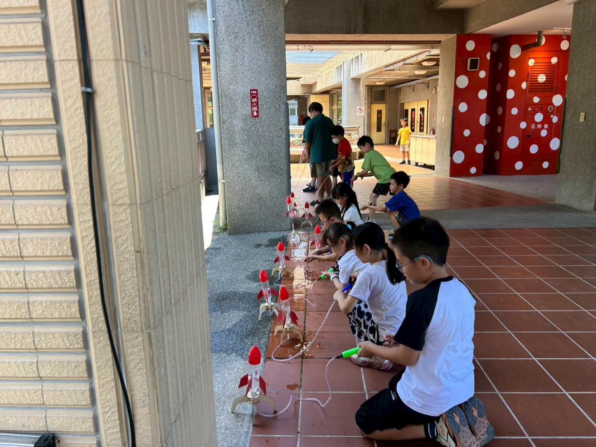
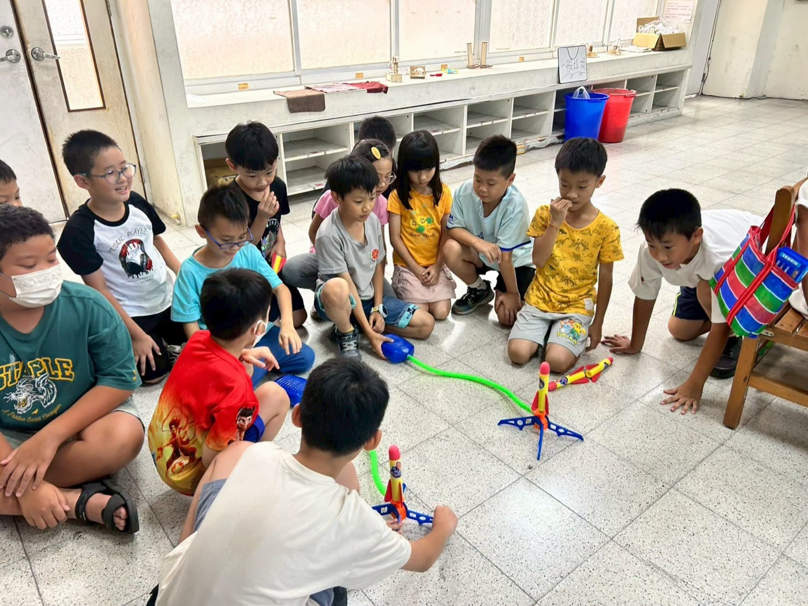
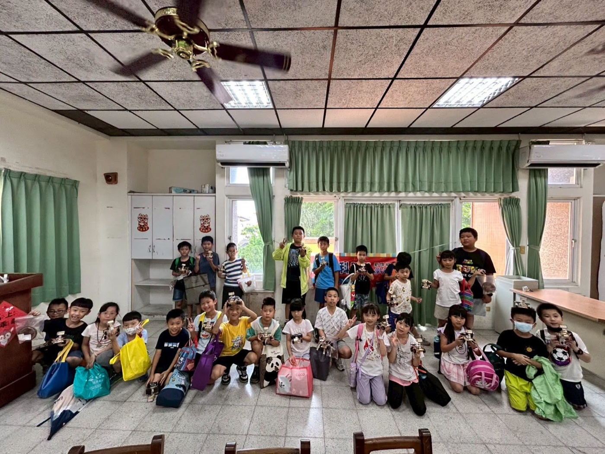

Three days. Sixteen experiments. One spectacular water rocket launch. That's what happened during Hsinmin Elementary's STEAM Science Camp "Water Rocket Squad" — and it was absolutely electrifying!
Students from Hsinmin were joined by young scientists from schools across the Tian-zhong area, all coming together for three packed days of hands-on discovery.
On Day 1, students became junior scientists, uncovering the hidden science at work all around them:
- Atmospheric Pressure — feeling the invisible force of air pressing on everything
- Capillary Action — watching water defy gravity and climb upward!
- Rainbow Principles — discovering how sunlight bends into seven brilliant colors
- Polarized Light — exploring the direction that light travels
Hands-on creations: a special-agent water pump and a mirror kaleidoscope. The core takeaway — science isn't just read about, it's discovered, touched, and tested. Students practiced hands-on problem-solving and the joy of asking "Why?"
Level up! Day 2 pushed the boundaries further with dazzling new experiments:
- Non-Newtonian Fluid — a substance that acts solid when struck hard and liquid when touched gently
- Water Filtration — learning how clean water is purified, layer by layer
- Galaxy Motion — exploring our solar system, planet orbits, and the universe
- Telescope Principles — bending light to reveal the secrets of space observation
Hands-on creations: a volcanic eruption and a solar-powered moon rover. By the end of Day 2, students had journeyed from earth science all the way to outer space — with curiosity as their rocket fuel.
The grand finale was everything we hoped for. Students explored action and reaction forces, then built, tested, and launched their very own water rockets — watching physics come alive as their creations soared toward the sky! They also explored inverse motion principles and challenged themselves with three card magic tricks, building logic, hand-eye coordination, and stage confidence.
🎓 At the closing ceremony, every student received a graduation certificate — and a heart full of memories, discoveries, and the knowledge that they are, indeed, real scientists. 🚀 The seeds of science have been planted. Now let's see how high they grow!






🚀【超酷的STEAM 科學營《水箭特攻隊》！成功!!!】🚀
#暑假第三週，三天的STEAM科學營熱鬧結束嚕!!!
讓我們一起來看看🧐孩子們學到了甚麼？
💡 Day 1：科學探索
孩子們化身小小特工，一步步揭開生活中的科學奧秘！
實驗探索：大氣壓力｜感受看不見的神奇空氣力量。毛細現象｜發現水居然能逆流而上！彩虹原理｜認識陽光折射出的繽紛七彩。偏振光｜探索光線運行的不同方向。
創意手作：特工抽水機、鏡像萬花筒
核心收穫：透過親自操作與反覆嘗試，培養動手實作、主動探索與解決問題的能力。
🌟 Day 2：科學挑戰
任務難度升級！特工們持續透過趣味實驗，挑戰科學的無限可能。
實驗探索：非牛頓流體｜體驗「遇強則強、遇弱則弱」的奇妙流體。濾水原理｜學習層層過濾，了解乾淨水源的淨化過程。星系運行｜探索太陽系奧秘，認識行星排列與公轉。望遠鏡原理｜動手折射光線，揭開宇宙觀測的面紗。
創意手作：火山大爆發、太陽能月球車
核心收穫：從地球科學跨足天文宇宙，在組裝與觀察中激發創造力與科學思維。
🏆 Day 3：圓滿結業
帶著滿滿的知識與自信，特工們迎來終極挑戰，為科學旅程畫下完美句點！
實驗與手作：作用力與反作用力｜親手製作、測試並發射「水火箭」，體驗衝向天際的科學張力。反向運動原理｜觀察力量與運動方向之間的有趣關係。卡牌魔術挑戰｜練習三項趣味魔術，鍛鍊邏輯思維、手眼協調與登台表達的自信。
圓滿落幕：領下結業證書，孩子們臉上洋溢著滿滿的成就感。這三天的探索，不僅帶回了豐富的作品，更在心中種下了科學的種子！
這次營隊學員除了大部分是新民的孩子，還有許多來自田中區各校的孩子們，一同來到新民國小校園學習，大家都表現很棒喔！
期待大家能把所學的知識牢牢記下來喔！
Words About Science & Discovery英語學習角 · 和科學與探索有關的小單字
Six key words — tap 🔊 to listen, then try the conversation and quiz.
六個關鍵字，點 🔊 聽發音，再試試對話和小考。
情境：兩個朋友聊起他們參加STEAM科學營的經歷。